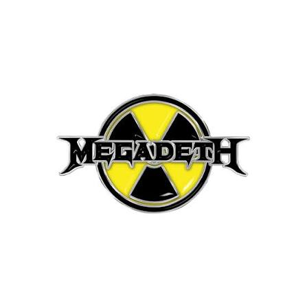
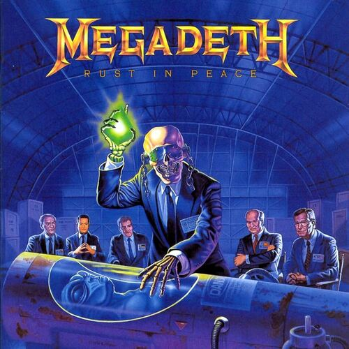

Vou mostrar minha banda favorita, o porquê e o meu álbum favorito dela

Meu primeiro post
Por: Alexandre de Morais
Boas-vindas ao meu blog bacana, aqui falaremos sobre uma banda que gosto
Megadeth:
É sem duvida umas das que mais me influencia na questão musical e até mesmo de pensar, tem musicas incriveis como Holy wars...the punishment due, tornado of souls ou até mesmo addicted to chaos
Bom, meu album preferido ainda é o Rust in Peace, um album tão incrivel que é amado até os de hoje, um album que é atual independente do tema, como guerras, uso de drogas, tema nucleares e relacionamentos passados

Rust in peace: o maior marco no metal
Por: Alexandre de Morais
Aqui eu irei falar sobre o meu album favorito do Megadeth, Rust in peace.
Sobre:
Lançado em 24 de setembro de 1990, Rust in peace é a personificação sonora do que era o Megadeth no seu auge, com a primeira aparição do guitarrista Marty Friedman,a formação era: Dave mustaine (guitarra ritimica e vocal), Marty Friedman (guitarra solo), David ellefson (baixo) e Nick Menza (bateria)
O album fala e temasa variados, como: religião, conflitos com drogas e vicio no ácool, consipirações sobre OVNIS e até mesmo sobre o personagem Justiceiro (Marvel comics). Esse é sem duvida um dos albuns mais influentes dos anos 90, pelos temas, criacão musical e outros.